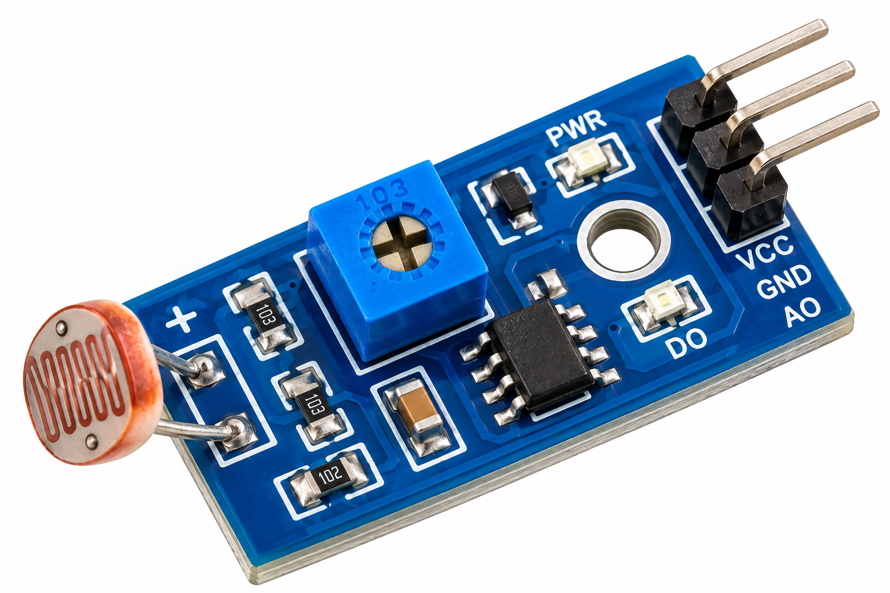

ESP32_CAM_Light_Activated_Camera.ino

Light-Activated Camera

To develop a light-activated camera experiment using an AI-Thinker ESP32-CAM, an LDR, a 10KΩ resistor and an SSD1306 OLED. The system monitors ambient light and automatically captures a JPEG image when the light level changes by at least 15 percentage points.
The Light-Activated Camera experiment uses a Light Dependent Resistor to detect changes in ambient light.
The LDR and 10KΩ resistor form a voltage divider connected to GPIO2 of the ESP32-CAM.
The ESP32-CAM reads the analog voltage and converts its 12-bit ADC value into an approximate light percentage from 0 to 100%.
The current light value is compared with a stored reference reading. When the absolute difference is 15 percentage points or more, the onboard camera captures a JPEG frame.
The SSD1306 OLED continuously displays the approximate light percentage, monitoring status and number of successful captures.
After a successful threshold event, the reference light value is updated and monitoring continues.
| Parameter | Configuration |
|---|---|
| Light Sensor | LDR voltage divider |
| Analog Input | GPIO2 |
| Fixed Resistor | 10KΩ |
| Light Reading | Approximate 0–100% |
| Capture Threshold | 15 percentage points |
| Reading Interval | 1000 ms |
| Image Format | JPEG |
| OLED | SSD1306 128×64 |
| Wi-Fi | Disabled |
This firmware does not enable Wi-Fi because GPIO2 is an ADC2 input on the original ESP32. ADC2 measurements can conflict with Wi-Fi operation.
The captured JPEG is held briefly in the camera frame buffer and then returned to the camera driver. No image file is saved permanently or made available through a browser.
The light percentage is a relative ADC-based estimate, not a calibrated lux measurement.

Main controller with an onboard camera.

Detects changes in ambient light.

Forms the voltage divider with the LDR.

Displays light percentage, monitoring and capture count.

Used to upload the firmware.

Used to assemble the voltage divider and display connections.

Used for electrical connections.
Install the ESP32 board package, Adafruit GFX and Adafruit SSD1306 libraries in Arduino IDE.
| Component | Terminal | Connection |
|---|---|---|
| LDR | One leg | 3.3V |
| LDR | Other leg | GPIO2 |
| 10KΩ Resistor | One leg | GPIO2 |
| 10KΩ Resistor | Other leg | GND |
| OLED Pin | ESP32-CAM Connection |
|---|---|
| VCC | 3.3V |
| GND | GND |
| SDA | GPIO13 |
| SCL | GPIO14 |
| Programmer Pin | ESP32-CAM Connection |
|---|---|
| TX | U0R / GPIO3 |
| RX | U0T / GPIO1 |
| GND | GND |
| 5V supply output, if suitable | 5V input |
| Parameter | Value |
|---|---|
| LDR Input | GPIO2 |
| OLED SDA | GPIO13 |
| OLED SCL | GPIO14 |
| OLED Address | 0x3C |
| OLED Resolution | 128×64 |
| Light Threshold | 15 percentage points |
| Check Interval | 1 second |
| ADC Resolution | 12-bit |
| Serial Monitor | 115200 baud |
The LDR and resistor must form a voltage divider between 3.3V and GND. Do not apply 5V directly to GPIO2.
GPIO2 is also a boot-strapping pin. The LDR voltage divider may hold GPIO2 HIGH under bright light, interfering with firmware download mode on some ESP32-CAM setups. Check boot behavior and, when needed, isolate the divider during programming.
The programmer must use 3.3V UART signal levels. If powering the ESP32-CAM from the programmer's 5V output, verify its current capability.

An LDR changes resistance depending on the amount of light falling on it. The voltage divider converts this resistance change into a variable analog voltage.
GPIO2 reads the voltage using the ESP32 ADC. The reading is mapped to an approximate 0–100% light value.
The program calculates the absolute difference between the current light percentage and the stored reference value.
A difference of at least 15 percentage points triggers an image capture.
The ESP32-CAM camera is initialized in JPEG mode. A frame is captured when the light-change threshold is reached.
The OLED shows the current light percentage and total successful capture count. During a capture, it displays CAPTURE! and the count.
The camera buffer is returned immediately after the capture information is printed. No permanent image archive or browser-viewable image is created by this firmware.
ESP32-CAM Experiment · Code Review
Select a step to highlight the complete matching source-code section in blue. Copy Code copies the entire ESP32-CAM Arduino sketch.
Select a topic to highlight its corresponding complete section of the code.
An LDR changes its resistance with incident light. A voltage divider converts that resistance change into an ADC input.
The ESP32 ADC converts an analog voltage into a numerical value. The program maps its reading to an approximate percentage.
A threshold of 15 percentage points means a change from 40% to 55% or from 40% to 25% can trigger capture.
The camera frame buffer contains the captured JPEG. This sketch returns the buffer after reading its size and does not save the photograph.
Answers: GPIO2; 10KΩ; GPIO13 and GPIO14; 15 percentage points; every 1 second; no.
Try It: Cover the LDR with your hand and then expose it to bright light. Observe the capture messages and OLED counter.
Starting Light-Activated Camera... OLED initialized. Camera initialized successfully! System ready. Initial light: 42%
Light: 44% | Reference: 42% | Change: 2% Light: 49% | Reference: 42% | Change: 7% Light: 58% | Reference: 42% | Change: 16% LIGHT CHANGE DETECTED CAPTURING IMAGE... Image captured successfully! Image size: 5824 bytes Capture number: 1
LIGHT ACTIVATED CAMERA L: 42% Monitoring... Captures: 0
CAPTURE! Light changed Count: 1
| Condition | System Response |
|---|---|
| Light change below 15 points | No new capture |
| Light change 15 points or greater | JPEG frame captured |
| Successful image capture | Capture counter increases |
| Capture complete | Reference light value updates |
| Wi-Fi access | Not available in this firmware |
This experiment uses the SSD1306 OLED and Serial Monitor as its status displays. The image below can show the experiment's monitoring output. It is not a live Wi-Fi dashboard.

The Light-Activated Camera experiment demonstrates automatic image capture based on changes in ambient light measured through an LDR voltage divider.
The ESP32-CAM checks the light level at one-second intervals and captures a JPEG image when the difference from the reference reaches 15 percentage points.
The SSD1306 OLED displays the approximate light percentage and successful capture count. The sketch does not permanently store the images.